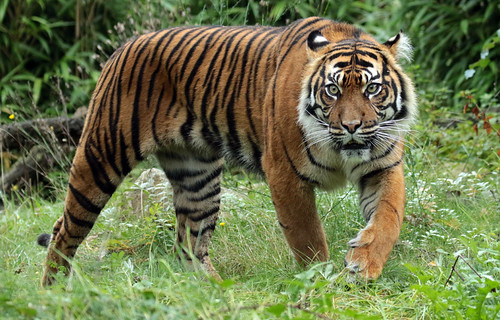

Суматранский тигр(Panthera tigris sumatrae) является одним из девяти известных подвидов тигра.
Это самый маленький из ныне живущих подвидов тигра, обитающий исключительно на острове Суматра в Индонезии. Взрослые самцы достигают длины около 2 метров и веса примерно 100—140 кг.
Популяция суматранских тигров резко сокращается из-за браконьерства и разрушения среды обитания. Сегодня этот вид находится под угрозой исчезновения, и по оценкам ученых, осталось менее 400 особей в дикой природе.
